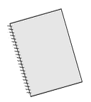

PsiPog.net
Telekinesis: Thoughts, Techs, and Tips
by Peebrain
Introduction
 Hello one and all. I've learned a lot since the last time I've spoke to everyone about telekinesis. For the past few months I've been practicing pretty regularly with the paper-on-pin exercise from my first article, Introduction to Telekinesis. After a lot of success, I started to keep a kind of "journal" recording things I've noticed and other tid-bits of information. What's that you say? You want to read my journal? Just click on the notebook to take a gander... Some of it is useless but there are some good spotsThoughts
I'm starting to try to piece together this strange ability. The first thing that comes to mind is the effort on my part. Defining this focused state I go into is a little hard... an analogy might help me there. Let's say I give you a task - move the ball in front of you. You easily reach out with your hand and give it a shove. What effort was there? Barely any. You didn't really think about moving your arm, you didn't think "flex biceps, now forearm", you just understood the task then fulfilled it. Even as I write this I can see this half-effort thing I'm talking about. I don't think about the shape of each letter or the spelling of the words as I write them. I have a sentence in my mind and my task is to "write this down." There's no real force or intense focus - it just happens. Telekinesis is the same way.Using the same analogy though, we can see it's a little harder than that. I could perform the "push the ball" task when little, but could I write sentences? Of course not. It took focus and practice to get where I am now. I had to learn the skill, then I could do it with no effort. Just like if I was a baby I wouldn't be able to push the ball. Telekinesis, if like other skills, takes focus at first, but eventually becomes effortless after the initial phase. The problem is getting through this phase.
If I tell a six year old to write a sentence, although they can't, they know how it's accomplished. They've seen others do it and know what happens, they just can't perform the task themselves. Unfortunately, we don't have that luxury with telekinesis. How can we learn if we have nothing to learn from?
This article may help some, but it's merely my personal discoveries and observations. It's better than nothing, but without any experienced telekinetics spreading information, it makes the learning process very slow. We all have questions in our heads that would be obvious to a veteran, but with a skill this
rare, it's kind of tough to find a reliable source of information. I'll explore some questions I have in my head and maybe we can all learn something  .
.
The key question currently in my mind is "How is this possible"? Scientifically, I mean, how is it possible for one to move an object with their mind? I've heard theories on electromagnetic fields and have come up with my own thoughts on magnetism and static electricity but I'm still clueless. I've also thought about linking aerokinesis to it - creating gusts of wind to move an object. Then we can get even more complex and ask "Is there more than one way to accomplish telekinesis?" You can write with a pen in your hands or a pen in your mouth, who says there's only one explanation for TK?
Maybe the answers will come in time - I'm not sure. Do I need to know how it works to progress any further? Do I need to know specific details to perform TK? I don't think so. I know, in general, that through thought I move something. The six year old knows that through finger movements, they write. They don't need to know the interaction between the ink and paper or the specific electrical signals sent by the brain, they just need a primitive understanding. This is all we should need for TK then.
How should the beginner start and more importantly (for me) what should the teacher provide? What are you looking for? The more I think about it, the clearer the answer becomes: Techniques and tips for success. The important part to understand is that you have to practice if you want this skill. There is
no special tech or secret words that "unlock" the ability. Some might progress faster than others, as with any skill, but effort is needed on the side of the student. I truly don't know that for a fact though... Personally, I believe there is a certain understanding and once you grasp it, you can perform TK
to any extent. Currently I feel the only way to achieve this "TK nirvana" is through constant practice and constant questioning. In the future I'm sure there will be a less tedious way, but someone's got to lead the way, why not us  ? Anyways... enough of this philosophical crap, onto the techs
? Anyways... enough of this philosophical crap, onto the techs  !!!
!!!
Exercises
The first exercise I will swear by is the paper-on-pin one I described in my last article. It has changed my whole outlook on telekinesis and has really helped me gauge my progress, not to mention the confidence boost. Here are simple instructions on how to make the device:What I do is balance the paper on a thumbtack and focus on spinning it (being careful not to breath on it). Visualization sometimes works but I find not thinking about anything is the most effective. Try to shut your conscious mind up and let your unconscious take over... see what it can do. Don't ask questions, don't react to movement, just understand your goal and watch it come true. I find that putting my finger super-close to one of it's corners helps a lot. I try to extend my aura into the objects aura. It's good to start this way but don't become dependent on it - I believe it helps the mind accept this strange phenomenon but it's really just another limit not worth putting on yourself. Use it at first but practice without it too. I've also found it's easier for my mind to bob the tool up and down rather than spin it - try both and see what's best for you.
Here is the second exercise I have also had success with. Take a bowl or cup and fill it with water. Now take a toothpick or something that floats and put it in the water. Wait for the ripples and waves to calm down then try to move the object while it floats there. This works great because there is relatively no friction. As with the last exercise though, you have to be careful. Bumping the table and breathing too heavily will produce false results.
Techniques
Now that you have some things to work with, we can get into the actual "How To" part. I know it sounds way too simple, but the method I use the most is just doing it. There's no thought in my mind, I just move it. It just happens. I can't describe it any other way... When I couldn't do TK it used to piss me off that others would say "Just do it" because it says absolutely NOTHING about HOW. But that's the thing... there is no "how" - you just do itNo, I won't cheap-out and only give you that way to do it. Sometimes I find that I can't "just do it". That's when I pull the tricks out  ... The first trick is to fool your subconscious into doing TK. Let's face it, sure, your subconscious is smart in a lot of aspects, but in others it's a complete idiot. It's gullible and mechanic. We can take advantage of this! What I do is to convince my mind that I am moving the
object; I say things like "See? It just moved! - There it goes again! It's bobbing up and down..." No, it's not really moving, but by focusing on believing it, I can trick my mind to actually do it. For example, say I'm trying to move the paper-on-pin. I try my usual "just do it" method and get
frustrated because I'm getting nowhere fast. First, I take a little break. Let my mind cool off and try to relax and have fun... Then I say to myself "I AM GOING TO MOVE IT". I look at the paper and it stands still... I focus and it's stationary... Then I say to myself "Hey, look, the paper just moved up
and down a little itty bitty. You didn't see it? Well it just moved... keep watching. See? There it goes again! You're doing it!" No, the paper isn't moving, but I convince my mind that it is... I trick my subconscious into thinking it's moving the paper. After a second or two, my subconscious says
"What? I'm moving the paper? OH! Ok!" and BOOM, the paper spins around in circles. Victory! Then I usually say something like "Hahahaha, I tricked you!"
... The first trick is to fool your subconscious into doing TK. Let's face it, sure, your subconscious is smart in a lot of aspects, but in others it's a complete idiot. It's gullible and mechanic. We can take advantage of this! What I do is to convince my mind that I am moving the
object; I say things like "See? It just moved! - There it goes again! It's bobbing up and down..." No, it's not really moving, but by focusing on believing it, I can trick my mind to actually do it. For example, say I'm trying to move the paper-on-pin. I try my usual "just do it" method and get
frustrated because I'm getting nowhere fast. First, I take a little break. Let my mind cool off and try to relax and have fun... Then I say to myself "I AM GOING TO MOVE IT". I look at the paper and it stands still... I focus and it's stationary... Then I say to myself "Hey, look, the paper just moved up
and down a little itty bitty. You didn't see it? Well it just moved... keep watching. See? There it goes again! You're doing it!" No, the paper isn't moving, but I convince my mind that it is... I trick my subconscious into thinking it's moving the paper. After a second or two, my subconscious says
"What? I'm moving the paper? OH! Ok!" and BOOM, the paper spins around in circles. Victory! Then I usually say something like "Hahahaha, I tricked you!"  .
.
Usually I can't use visualization when doing TK... it just doesn't seem to work. One of the few visualizations that work is the following: Imagine all the energy in the room as tiny particles. "See" them swirling around like a tornado... whooshing around you... moving like wind through the air... Then
direct all this energy towards the object. Get the energy-wind to blow the object in a direction. Believe it or not, it works! I've debated whether this is Aerokinesis (moving and generating winds with your mind) but I've decided that Aerokinesis should be a subclass of Telekinesis. It's moving something with
your mind, right? So, I don't know if you're actually doing aerokinesis here or if you're moving the object with energy, but it gets the job done, so who cares  ?
?
Just perceiving the energy of the object can be a good technique in itself. I'm not going into the details of aura vision but seeing the objects energy interact with your aura makes it a lot easier. I will even debate you don't even need to learn aura vision. Again, trick your subconscious... or even just suggest to your subconscious to see the energy. Say something like "Look at the objects energy - manipulate it and use it to move the object". You don't have to actually see the energy (but it does help, obviously). Tell your subconscious too see the energy... instruct it to use this knowledge. You are in control, you tell your subconscious what to do.
Just using basic energy manipulation you can try to achieve telekinesis too. It's not very effective for me, but it might work wonders for you, so I'll include it here. Basically, just as you create psi balls, you emit energy out of, say, your finger-tip. Two things I've noticed here... 1. Energy being
emitted INTO the object will pull the object towards my finger. I can't push with energy... the energy moves through the object like a river and the object moves UPSTREAM. I don't know why, but that's how it works with me. 2. Sometimes my energy is better used as a semi-circle around the object. Not going
through it, but kind of surrounding it. Like a shield almost. Try both ways and see if you can get it to work... like I said above, this doesn't work very well for me. I've had very limited results doing this technique - but give it a shot anyways. You never know until you try  .
.
I still have one more technique up my sleeve... Convince you're mind that the object needs to move. Think "It needs to do this." Turn the object into a being in your mind then persuade yourself to think the being wants to do something. For example, I look at the paper. I think "Hey little guy... oh man, you need to spin this way. You really need to do that." Sometimes it works and sometimes it doesn't. Give it a go and see what happens.
Tips
The tips I'll present are ideas that just came to me. My mind would be having trouble and then, all of the sudden, I would "hear" a word or phrase that would make me understand what I was doing wrong. I believe telekinesis is a state of mind... an understanding of the world. Ones that can do it naturally already have this understanding. Others, like you (I assume) and me, have to develop this "understanding". These keywords helped me get closer to it, maybe they'll help you.The first word that ever came to me was "Graceful." I was forcing energy upon the object, trying pretty hard to get it going, when my mind said it. I thought, "Hmmm, why the hell did I just hear 'graceful'?" So I tried to emit the energy gracefully. To make a short story shorter, it worked  ! Instead of bombarding the object with energy, I used the energy in a smooth, curve-like manner. Heh, "graceful" is the best word to describe it.
! Instead of bombarding the object with energy, I used the energy in a smooth, curve-like manner. Heh, "graceful" is the best word to describe it.
The second thing I heard was "Perceive and Manipulate." This goes back to my one technique above - it's pretty self-explanatory. Basically, I was just tired and not thinking that much. My techniques weren't working that good and my mind just blurted it out. Like last time, I understood what to do and it
worked like a charm  . The idea is to understand the object through energy perception and manipulate this understanding. It's hard to explain - you're just going to have to try it and learn yourself.
. The idea is to understand the object through energy perception and manipulate this understanding. It's hard to explain - you're just going to have to try it and learn yourself.
The third phrase that jumped into my head was "Realize and understand that the power just exists." After I heard that and began to understand it's meaning, I became much more powerful and had a lot more control over the paper. These phrases aren't easy to explain... maybe you have to actually experience
them to understand it fully. It basically says that, just as you exist, the power exists. It's so simple it's confusing  . The power just exists. I wish I could go more in depth... there's really not much to say though.
. The power just exists. I wish I could go more in depth... there's really not much to say though.
I'll keep listening to my mind and try to "hear" more tips - if you want some other tips, read my journal. The link is at the top of this article. You'll probably be able to gather something useful from it (I hope).
Conclusion
Ahhhh! Finally done! This article might have taken you 10 minutes to read but it took me a couple weeks to write~Sean (aka Peebrain)
Click here for printable version
Last Modified on May 24 2002
All Content, Images, Video, Text, and Software is © Copyright 2000-2006 PsiPog.net and their respective authors. All Rights Reserved.
You must agree to the Terms of Service and Privacy Policy to view this website. Click here to contact the webmaster.